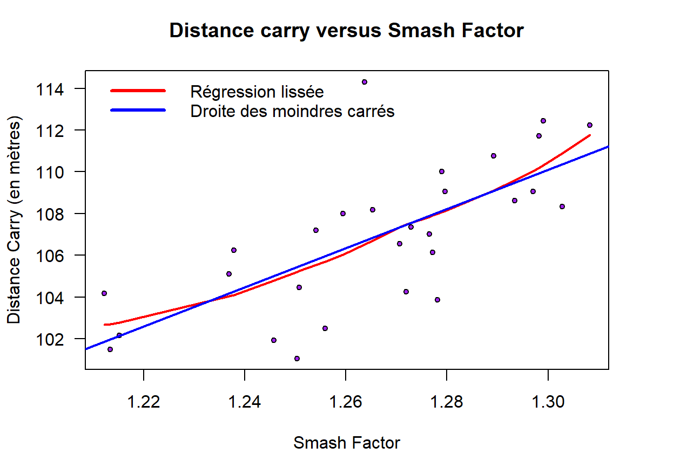

Analyse d’un radar de golf

Contexte
Analyse de données issues d’un radar de golf afin d’identifier les facteurs permettant d’améliorer la distance et la précision des coups.
Méthode
Analyse des corrélations, visualisation des relations entre variables et construction de modèles de régression linéaire simple à partir des données du radar.
Résultats
L’analyse met en évidence les principaux facteurs influençant la performance d’un coup de golf, notamment la distance au carry et sa déviation. Les modèles de régression permettent d’identifier les variables les plus pertinentes pour améliorer la puissance et la précision des coups.